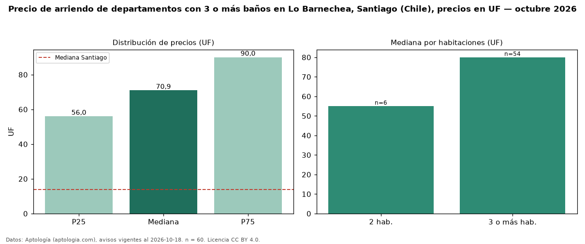

Precio de arriendo de departamentos con 3 o más baños en Lo Barnechea, Santiago (Chile), precios en UF — octubre 2026
UF 70,94 al mes es el canon mediano de departamentos con 3 o más baños en arriendo en Lo Barnechea, Santiago (Chile) (n = 60 avisos). Frente a la mediana de todos los departamentos en arriendo de Lo Barnechea (UF 48,00, n = 141), queda 48 % por encima; este segmento reúne el 43 % de esos avisos. Por metro cuadrado, la mediana es UF 0,37/m² al mes (n = 43), 6 % por debajo del conjunto de referencia (UF 0,39/m²). El área mediana anunciada es 205 m². El segmento con más oferta es el de 3 o más habitaciones (54 avisos, mediana UF 80,00); pasar de 2 habitaciones a 3 o más habitaciones cambia la mediana +45 %. La mediana de todos los departamentos en arriendo de Santiago es UF 13,85 (+412 % de diferencia). La mitad central de los avisos va de UF 56,00 a UF 90,00 (razón 1,6), una dispersión moderada. Datos: Aptología (aptologia.com), CC BY 4.0 — https://www.aptologia.com/cl/arriendo/santiago/lo-barnechea. Archivos: PDF, CSV con las cifras y gráfica PNG.

| Avisos únicos | 60 |
|---|---|
| Percentil 25 | COP 56 |
| Mediana | COP 70 |
| Percentil 75 | COP 90 |
| Mediana por m² | COP 0 |
Fuente: avisos vigentes de portales inmobiliarios recopilados por Aptología, deduplicados (mínimo 30 avisos únicos por celda). Precios pedidos, no cerrados. Fecha: 2026-10-18.